智能锁安装与说明
1.部件描述
2.准备工作
3.锁安装
4.APP安装与配置
1.部件描述
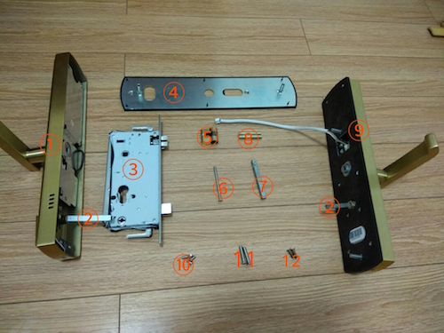
① :后面板 ②: 旋转条 ③:锁体 ④:后面盖板 ⑤:锁芯 ⑥:固定锁芯螺丝 ⑦:方杆 ⑧:双向螺帽 ⑨:前面板 ⑩:锁体固定螺丝 11:后面盖板板固定螺丝 12:后面板固定螺丝
2.准备工作
1）根据开门方式调节锁体中锁舌位置
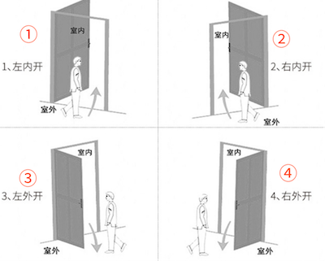
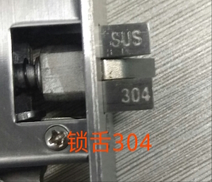
①和② 304锁舌朝室内
③和④ 304锁舌朝室外
2）如何调节锁体中锁舌方向
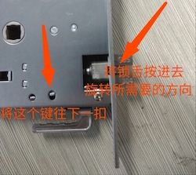
3）切方铁，根据方铁的标记，门厚多少切多少
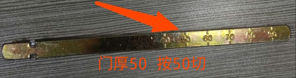
4）切前后面板旋转片， 注意：前后两个面板的旋转片都要切
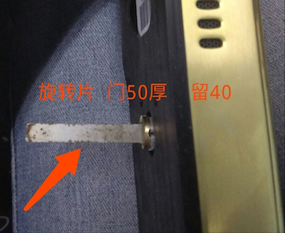
旋转片的长度不能超过门厚
3.锁的安装
1）将锁体塞入门中，固定上下四枚螺丝，锁舌304朝前面板方向
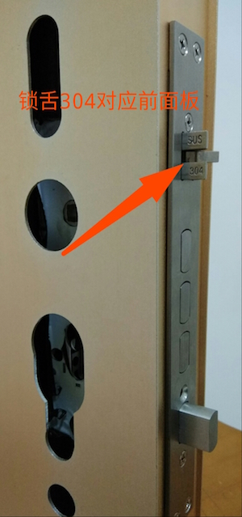
2）将锁芯插入锁体，十字口对准前面板
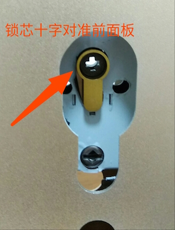
3）安装锁芯螺丝
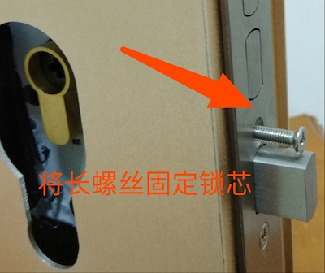
4）安装前面板上下两枚螺丝的双向螺帽
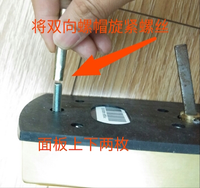
5）按住小按钮，插上方铁，△对准把手方向
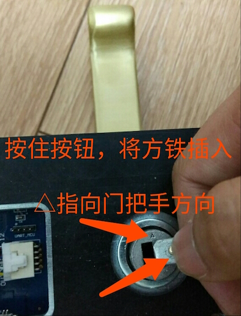
6）将方铁对方孔，旋转片对准锁芯，上下2枚螺丝帽和连接线穿过对应孔位
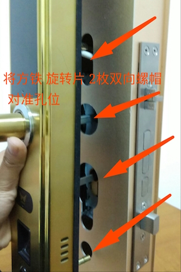
7）安装后面盖板，固定前面板拧紧上下两枚螺丝，方铁孔处于圆孔中心位置
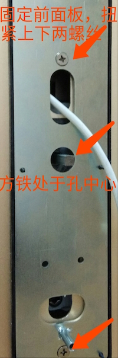
8）将连接线穿过贴片卡片，然后连接数据线。
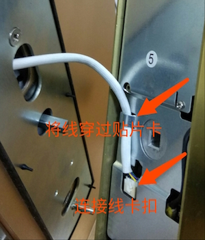
9）方铁对准后面板方孔，旋转片对准反锁孔，并将连接线塞入门内，然后盖紧。
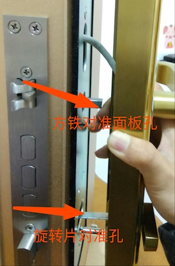
10）固定后面板的上下两枚螺丝，安装完毕。
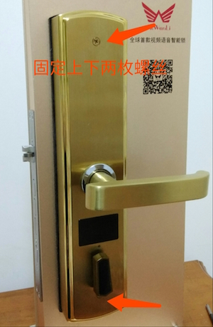
4.APP的安装与配置
1）下载APP
1.android扫描下面二维码安装，或者前去360，腾讯应用市场，搜索九万里智能锁
2.苹果用户前去 APP Strore，搜索九万里智能锁
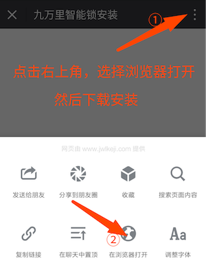
2）按门铃后再按reset键，配置网络
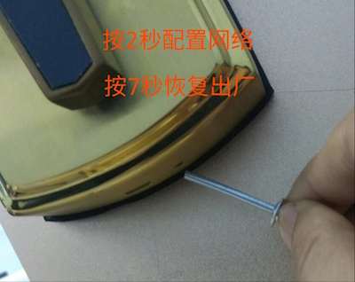
reset键按下去是有反馈的，请勿用牙签活针类物品按压
3）Android手机配置，提示开启定位权限对话框
在手机自身 安全中心 或者 手机管家 设置里面找到九万里APP,然后找到权限管理 打开定位权限，重新配置一次
4）绑定微信，实现开门记录微信推送
在微信公众号搜索 九万里智能锁(关注)--在线服务(右下角)--绑定智能锁(根据提示操作）
5）智能锁默认密码123456，为了您的安全，请及时修改管理员密码。